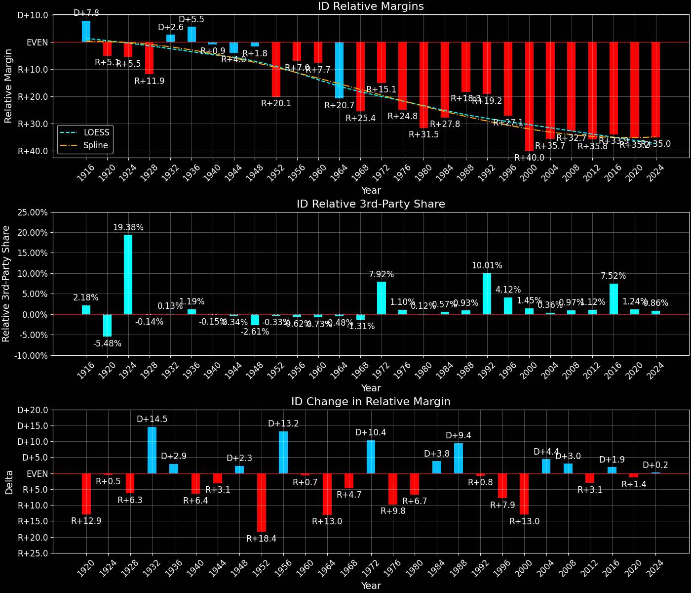
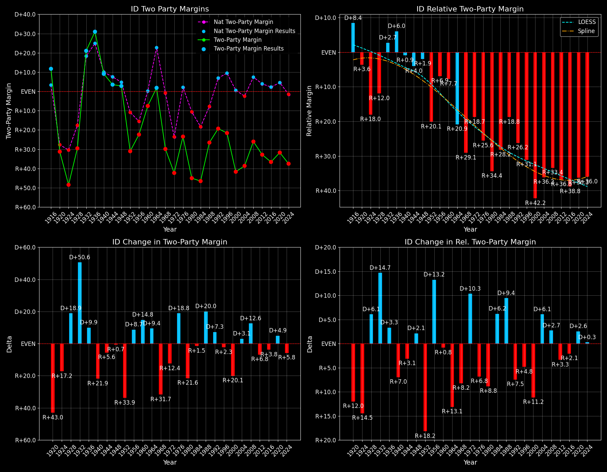

Idaho (ID) — Statewide

Margins · 3rd-Party share · Pres. deltas

Relative margins · Relative 3rd-Party · Rel. deltas
Idaho (ID) — Total Data
| Year | EVs | D | R | State Margin | Nat. Margin | Rel. Margin | Total votes |
|---|---|---|---|---|---|---|---|
| 1968 | 4 | 89,273(30.7%) | 165,369(56.8%) | R+26.1 | R+0.6 | R+25.5 | 291,183 |
| 1972 | 4 | 80,826(28.8%) | 199,384(71.2%) | R+42.3(Δ R+16.2) | R+23.5(Δ R+23.0) | R+18.8(Δ D+6.8) | 280,210 |
| 1976 | 4 | 126,549(38.3%) | 204,151(61.7%) | R+23.5(Δ D+18.8) | D+2.2(Δ D+25.7) | R+25.7(Δ R+6.9) | 330,700 |
| 1980 | 4 | 110,192(25.7%) | 290,699(67.9%) | R+42.2(Δ R+18.7) | R+9.9(Δ R+12.1) | R+32.3(Δ R+6.6) | 427,949 |
| 1984 | 4 | 108,510(26.7%) | 297,523(73.3%) | R+46.6(Δ R+4.4) | R+18.1(Δ R+8.2) | R+28.4(Δ D+3.8) | 406,033 |
| 1988 | 4 | 147,272(36.7%) | 253,881(63.3%) | R+26.6(Δ D+20.0) | R+7.7(Δ D+10.4) | R+18.8(Δ D+9.6) | 401,153 |
| 1992 | 4 | 137,013(28.4%) | 202,645(42.0%) | R+13.6(Δ D+13.0) | D+5.6(Δ D+13.3) | R+19.2(Δ R+0.4) | 482,114 |
| 1996 | 4 | 165,443(33.6%) | 256,595(52.2%) | R+18.5(Δ R+4.9) | D+8.6(Δ D+3.0) | R+27.1(Δ R+7.9) | 491,711 |
| 2000 | 4 | 138,637(27.6%) | 336,937(67.2%) | R+39.5(Δ R+21.0) | D+0.5(Δ R+8.0) | R+40.0(Δ R+13.0) | 501,615 |
| 2004 | 4 | 181,098(30.3%) | 409,235(68.4%) | R+38.1(Δ D+1.4) | R+2.5(Δ R+3.0) | R+35.7(Δ D+4.4) | 598,447 |
| 2008 | 4 | 236,827(36.1%) | 403,809(61.5%) | R+25.4(Δ D+12.7) | D+7.3(Δ D+9.7) | R+32.7(Δ D+3.0) | 656,233 |
| 2012 | 4 | 212,787(32.6%) | 420,911(64.5%) | R+31.9(Δ R+6.5) | D+3.9(Δ R+3.4) | R+35.8(Δ R+3.1) | 652,274 |
| 2016 | 4 | 189,765(27.5%) | 409,055(59.2%) | R+31.8(Δ D+0.1) | D+2.1(Δ R+1.8) | R+33.9(Δ D+1.9) | 690,433 |
| 2020 | 4 | 287,021(33.1%) | 554,119(63.8%) | R+30.8(Δ D+1.0) | D+4.4(Δ D+2.3) | R+35.2(Δ R+1.3) | 868,337 |
| 2024 | 4 | 274,972(30.4%) | 605,246(66.9%) | R+36.5(Δ R+5.7) | R+1.5(Δ R+6.0) | R+34.9(Δ D+0.3) | 905,057 |
Column explanations
- Δ
- Change (delta) in the value from the previous election year.
- Year
- Election year.
- EVs
- Number of electoral votes allocated to this state or unit.
- D
- Number of votes for the Democratic candidate (raw count(pct%)).
- R
- Number of votes for the Republican candidate (raw count(pct%)).
- State Margin
- Margin between the two major-party candidates, including third-party votes ((D - R)/total).
- Nat. Margin
- The national presidential margin for that year, including third-party votes ((D_total - R_total)/total_votes).
- Rel. Margin
- The presidential margin relative to the national presidential margin (Margin - Nat. Margin).
- Total votes
- Total voter turnout or ballots cast (when provided).
Idaho (ID) — Third-Party Data
| Year | Other votes | State 3rd-Party Share | 3rd-Party Nat. Share | 3rd-Party Rel. Share |
|---|---|---|---|---|
| 1968 | 36,541(12.5%) | 12.55% | 13.59% | -1.04% |
| 1972 | 0(0.0%) | 0.00% | 0.09% | -0.09% |
| 1976 | 0(0.0%) | 0.00% | 0.33% | -0.33% |
| 1980 | 27,058(6.3%) | 6.32% | 6.98% | -0.65% |
| 1984 | 0(0.0%) | 0.00% | 0.12% | -0.12% |
| 1988 | 0(0.0%) | 0.00% | 0.21% | -0.21% |
| 1992 | 142,456(29.5%) | 29.55% | 19.23% | 10.32% |
| 1996 | 69,673(14.2%) | 14.17% | 9.68% | 4.49% |
| 2000 | 26,041(5.2%) | 5.19% | 3.65% | 1.54% |
| 2004 | 8,114(1.4%) | 1.36% | 0.84% | 0.52% |
| 2008 | 15,597(2.4%) | 2.38% | 1.38% | 1.00% |
| 2012 | 18,576(2.8%) | 2.85% | 1.62% | 1.23% |
| 2016 | 91,613(13.3%) | 13.27% | 5.54% | 7.73% |
| 2020 | 27,197(3.1%) | 3.13% | 1.84% | 1.29% |
| 2024 | 24,839(2.7%) | 2.74% | 1.88% | 0.86% |
Column explanations
- Year
- Election year.
- Other votes
- Number of votes for third-party (other) candidates (raw count(pct%)).
- State 3rd-Party Share
- Share of the vote received by third-party (other) candidates.
- 3rd-Party Nat. Share
- The national third-party share for that year (3rd-Party votes / total votes).
- 3rd-Party Rel. Share
- Third-party share relative to the national third-party share (3rd-Party share - Nat. 3rd-Party share).

Two-party margins · relative · deltas
Idaho (ID) — Two-Party Data
| Year | 2-Party Margin | 2-Party Nat. Margin | 2-Party Rel. Margin |
|---|---|---|---|
| 1968 | R+29.9 | R+0.7 | R+29.2 |
| 1972 | R+42.3(Δ R+12.4) | R+23.6(Δ R+22.9) | R+18.8(Δ D+10.5) |
| 1976 | R+23.5(Δ D+18.8) | D+2.2(Δ D+25.8) | R+25.7(Δ R+6.9) |
| 1980 | R+45.0(Δ R+21.6) | R+10.6(Δ R+12.8) | R+34.4(Δ R+8.7) |
| 1984 | R+46.6(Δ R+1.5) | R+18.1(Δ R+7.5) | R+28.4(Δ D+6.0) |
| 1988 | R+26.6(Δ D+20.0) | R+7.8(Δ D+10.4) | R+18.8(Δ D+9.6) |
| 1992 | R+19.3(Δ D+7.3) | D+6.9(Δ D+14.7) | R+26.2(Δ R+7.4) |
| 1996 | R+21.6(Δ R+2.3) | D+9.5(Δ D+2.6) | R+31.1(Δ R+4.8) |
| 2000 | R+41.7(Δ R+20.1) | D+0.5(Δ R+8.9) | R+42.2(Δ R+11.2) |
| 2004 | R+38.6(Δ D+3.1) | R+2.5(Δ R+3.0) | R+36.2(Δ D+6.1) |
| 2008 | R+26.1(Δ D+12.6) | D+7.4(Δ D+9.8) | R+33.4(Δ D+2.7) |
| 2012 | R+32.8(Δ R+6.8) | D+3.9(Δ R+3.4) | R+36.8(Δ R+3.3) |
| 2016 | R+36.6(Δ R+3.8) | D+2.2(Δ R+1.7) | R+38.8(Δ R+2.1) |
| 2020 | R+31.8(Δ D+4.9) | D+4.5(Δ D+2.3) | R+36.3(Δ D+2.6) |
| 2024 | R+37.5(Δ R+5.8) | R+1.6(Δ R+6.1) | R+36.0(Δ D+0.3) |
Column explanations
- Δ
- Change (delta) in the value from the previous election year.
- Year
- Election year.
- 2-Party Margin
- Margin between the two major-party candidates, ignoring third-party votes ((D - R)/(D + R)).
- 2-Party Nat. Margin
- The national presidential margin for that year, including third-party votes ((D_total - R_total)/total_votes).
- 2-Party Rel. Margin
- The presidential margin relative to the national presidential margin (Margin - Nat. Margin).